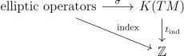

Given an elliptic operator between (complex) vector bundles \(V,W\) on a closed manifold \(M\), the Atiyah-Singer index theorem expresses its index in terms of topological invariants. One natural way to formulate and prove this theorem, which will be sketched here, is via K-theory and pseudo-differential operators. The topological index that we construct will factor through K-theory via a symbol map as shown in the diagram below:

Here \(K(TM)\) is the compactly supported \(K\)-theory defined as the reduced \(K\)-group of the one point compactification. The map \(\sigma \) map is called the symbol map and is obtained from the principal symbol of the elliptic operator. The map \(t_{\text{ind}}\) is called the topological index. Once these maps have been defined, the theorem states:
A cohomological form of the index theorem can be obtained by applying the Chern character, the ring isomorphism between rational K-theory and rational cohomology (with compact supports). The Todd class enters in the statement as a correction factor since the Thom isomorphisms of \(K\)-theory and cohomology don’t exactly commute with the Chern character. A cohomological statement obtained from applying the Chern character is:
Theorem 1.2. If \(D\) is an elliptic operator on a compact \(n\)-manifold \(M\), then \(\ind D = (-1)^n(\text{ch}(\sigma (D)) \smile \text{td}(TM \otimes \CC ))[TM]\)
There is a natural way to extend the discussion from elliptic operators to elliptic complexes. Namely, let a complex of partial differential operators be operators \(\Gamma E_0 \to \Gamma E_1 \to \dots \to \Gamma E_n\) that form a chain complex where \(\Gamma E_i\) are the smooth sections of some vector bundles \(E_i\). If \(b_i\) is the rank of the \(i^{\text{th}}\) homology group of this complex, then the index is \(\sum _i (-1)^i b_i\). Associated to this complex is an associated complex \(0 \to \pi ^*E_0 \to \pi ^*E_1 \to \dots \to \pi ^*E_n \to 0\), where \(\pi \) is the projection \(TM \to M\), given by taking the principle symbol of the operators. The original complex is said to be elliptic if this associated complex is exact outside the zero section. In the case that there are only \(E_0,E_1\), this agrees with the notion of an elliptic operator from \(E_0\) to \(E_1\). \(\sigma \) will be defined for elliptic complexes, and the index theorem will hence hold for elliptic complexes.
However, this doesn’t really add more generality. Given an elliptic complex \(\Gamma E_i \xrightarrow{d} \Gamma E_{i+1}\), we can consider the map \(\Gamma \oplus _{j=2i} E_j \to \Gamma \oplus _{j=2i+1} E_{j}\) given by \(d + d^*\) where \(d^*\) is the adjoint of \(d\) with respect to some hermitian inner product on each \(E_i\). This map is still an elliptic partial differential operator, has the same index as the complex and will have the same value in \(K(TM)\). Thus the index theorem only needs to be proved for elliptic operators.
To define our symbol map, we will use the fact that the K group for a locally compact space can be defined the following way. Take the semi-group of finite complexes of vector bundles on \(M\) \(0 \to E_1 \to \dots \to E_n \to 0\) such that set on which the complex is not exact is compact. Identify complexes that are homotopic, meaning there is a complex on \(M\times [0,1]\) restricting to each at the end, which also is not exact with compact support. Then taking the quotient by the complexes that are exact, the result is \(K(M)\). The product structure in \(K(M)\) is given by the tensor product of complexes. In fact, we can fix any length and consider only complexes of that length, and the end result will still be \(K(M)\). The construction in the last paragraph using a hermitian inner product to turn complexes of arbitrary length into complexes of length \(1\) preserves the element of \(K(M)\). The associated symbol complex of an elliptic complex \(\Gamma E^*\) on \(M\) is only not exact at the \(0\)-section which is compact, so it defines an element \(\sigma (\Gamma E^*) \in K(TM)\).
Finally we need to define \(t_\text{ind}\) for any compact manifold \(M\). It will be characterized by three properties. If \(\tilde{M}\) is the one point compactification, and \(Y \hookrightarrow M\) is an open inclusion, there is a natural quotient map \(\tilde{M} \to \tilde{Y}\) which induces an extension map \(h:K(Y) \to K(M)\). The first axiom is excision, namely that if we have an open inclusion \(U \to \RR ^n\), \(t_{\text{ind}}\) commutes with the extension of \(TU \to T\RR ^n\).
The second axiom is naturality with respect to the inclusion of a compact \(M\) as the \(0\)-section of a vector bundle \(\pi :E \to M\). \(TE = \pi ^*TM \oplus \pi ^*E\), and so \(TE \to TM\) is isomorphic to the bundle \(\pi ^*E \oplus \pi ^*E\), and can be given a complex structure via \(\pi ^*E \oplus i\pi ^*E\). Now via the Thom isomorphism, we have a map from \(K(TM) \to K(TE)\). \(t_\text{ind}\) commutes with this map.
Finally, \(t_\text{ind}\) must be normalized for a point as the usual identification of \(K(\cdot ) \cong \ZZ \) via the rank.
We can construct \(t_{\text{ind}}\) for any manifold \(M\) by taking an embedding into \(\RR ^n\), using the inclusion into the normal bundle using the Thom isomorphism axiom, extending to all of \(\RR ^n\) via the extension axiom, and then viewing \(\RR ^n\) as the normal bundle of a point using both axioms again to get an element of \(K(\cdot )\). This does not depend on the inclusion \(M \to \RR ^n\), because if \(i_1,i_2\) are two inclusions, \(i_1\oplus i_2\) is isotopic to \(i_1 \oplus 0\) and \(0 \oplus i_2\), and the Thom isomorphism is well-behaved with respect to stabilization of bundles. Moreover, it is easy to see that anything satisfying the axioms must be equal to \(t_{\text{ind}}\) because we the definition can be obtained from the axioms.
These axioms will guide the proof of the theorem. We would like to make a map called the analytic index that takes an element of \(K(TM)\) to “\(\ind \circ \sigma ^{-1}\)”. Then if we could show it satisfies the same axioms as the topological index, the proof would be complete. Unfortunately, not every element of \(K(TM)\) comes from the symbol of an elliptic operator, and it’s not apriori clear that two elliptic operators with the same image via \(\sigma \) will have the same index. The failure of surjectivity can be seen for example in the case of odd-dimensional manifolds.
If \(n\) is odd, we can apply the antipode map \(a\) on \(TM\) to \(\sigma (D)\). \(\sigma (D)\) is given by the principal symbol, which is a homogeneous polynomial \(p(\xi )\) on each fibre of \(M\). This means that \(p(-\xi )\) is \(\pm p(\xi )\). In either case, \(a^*\sigma (D) = \sigma (D)\) because the negative map is homotopic to the identity by rotating around the circle. However, if we look at \(\sigma (D)\) in rational K-theory, which can be identified with compactly supported rational cohomology, \(TM\)’s orientation is reversed as \(n\) is odd, so \(a^*\sigma (D) = -\sigma (D)\). Thus \(\sigma (D)\) is \(0\) in rational \(K\)-theory, so must be torsion. in particular, since \(t_\text{ind}\) is a homomorphism to \(\ZZ \), by the index theorem \(\ind (D) = 0\). Then \(\sigma \) will not be surjective.
To fix the problem, we will consider pseudo-differential operators instead of partial differential operators. Given a manifold \(M\), a pseudo-differential operator \(D\) of order \(m\) is an operator of the following form from compactly supported smooth sections of a bundle \(E\) to smooth sections of a bundle \(F\) with the following properties. Consider any chart \(\RR ^n\) on which \(E\) and \(F\) can be trivialized to be trivial bundles of ranks \(l,k\). For any compactly supported function \(f\) and any smooth section \(u\) of \(E\) on the chart, we must have \(D(fu)(x) = \int p_f(x,\xi ) \sF (u)e^{i\langle x,\xi \rangle }d\xi )\) where \(\sF \) is the Fourier transform, and \(p_f\) is some matrix where each partial derivative of \(p_f\) is \(O(\xi ^{m-|a|})\) where \(|a|\) is the number of times the partial derivative is taken in the \(\xi \) direction. Moreover, we should like the limit \(\sigma _f(x,\xi )= \lim _{\lambda \to \infty } \frac{p_f(x,\lambda \xi )}{\lambda ^m}\) to exist. When \(f\) is compactly supported but \(1\) in a neighborhood of \(x\), \(\sigma _f(x,\xi )\) doesn’t depend on \(f\) and is defined to be \(\sigma (x,\xi )\) which is called the principal symbol. The principal symbol similarly defines an associated complex of bundles on \(TM\), and the operator is elliptic if this is exact outside the \(0\) section. This definition comes from generalizing the definition of a partial differential operator, which acts on the Fourier transform via multiplication by a polynomial. Instead, a pseudo-differential operator acts on the Fourier transform via any function with similar growth behavior.
Elliptic pseudo-differential operators, like elliptic operators, are Fredholm. An example of an elliptic pseudo-differential operator is the operator \(A_{S^1}\) on the trivial line bundle of \(S^1\) sending \(e^{ik\theta }\) to itself when \(k\) is negative and to \(e^{(i+1)k\theta }\) when \(k\) is nonnegative. The symbol is \(e^{i\theta }\) when \(\xi \) is positive and \(1\) when it is negative. It has index \(-1\) which we saw is impossible for an elliptic partial differential operator.
Any element of \(K(TM)\) comes from an elliptic pseudo-differential operator. To see this, an element of \(K(TM)\) can be obtained from some bundle map \(f:E \to F\) which is an isomorphism away from some compact set \(L\). Choose a metric for which the unit disk bundle of \(TM/M\) contains \(L\). The composite \(TM \xrightarrow{\pi } M \xrightarrow{0} TM\) is homotopic to the identity, so if \(E_0,F_0\) are the pullbacks of \(E,F\) along this map, they are isomorphic to \(E,F\). We can produce a map \(f_m: E_0 \to F_0\) by extending the map from \(E\) to \(F\) as a homogeneous function of degree \(m\), meaning, that \(f_m(\lambda v) = \lambda ^m f_m(v), v \in TM\). It is easy to see that \(f_m\) is homotopic to \(f\). Moreover, if \(f\) is an isomorphism it can be made to be constant, so that the corresponding map \(f_m\) will be constant on the unit sphere bundle. Conversely if the \(f_m\) is constant on the unit sphere bundle, then the homotopy \(f_m(v,t) = \Vert v \Vert ^{tm} f_m (\frac v{\Vert v \Vert }\)) will take it to an isomorphism. Thus we have obtained the following lemma:
Lemma 2.1. \(K(TM)\) can be taken to be the monoid of homotopy classes of homogeneous degree \(m\) maps of bundles on \(TM\) \(E \to F\) modulo those which are constant on the unit sphere bundle.
Note that these homogeneous maps may not be continuous at the origin for \(m \leq 0\). Thus given an element of \(K(TM)\) represent it via some homogeneous map \(f_m:E \to F\), choose coordinates, a trivialization of \(TX,E,F\), and a smooth function \(\varphi \) that is \(0\) in a neighborhood of the zero section of \(TM\) (where the map may not be continuous) and \(1\) far away from this section. The pseudo-differential operator defined locally via \(Du(x) = \int \varphi (\xi )f_m(x,\xi )\sF (u)e^{i\langle x,\xi \rangle }d\xi \) will then be an order \(m\) and have \(f_m\) as its symbol.
In order to have a well-defined analytic index, we need the following fact to be true:
Lemma 3.1. If \(D,E\) are pseudo-differential operators on a compact \(M\) and \(\sigma (D) = \sigma (E)\), then \(\ind (D) = \ind (E)\).
Proof. First, suppose \(D,E\) have the same degree. If they have the same symbol, the linear homotopy \(tD+(1-t)E\) preserves the symbol, so provides a homotopy through elliptic operators between \(D\) and \(E\). Since elliptic operators are Fredholm and index is locally constant, \(\ind (D) = \ind (E)\). Now if \(D,E\) have symbols that are homotopic as homogeneous complexes, we can build a homotopy of operators as in the proof of surjectivity of \(\sigma \) between two operators with the same symbols as \(D,E\) showing again that they have the same index. If \(D,E\) have symbols differing by a map that is constant on the unit sphere bundle, it must be the case that \(m =0\) as the map must be an isomorphism of bundles and homogeneous. But then if \(\alpha \) is the function on the unit sphere bundle, \(D,E\) differ by the operator \(Pf = \alpha f\) which has index \(0\). Finally suppose that \(D,E\) have the same restriction to the unit sphere bundle, but have different orders. Then we can consider \(\sigma (D)/\sigma (E)\) which is the identity on the unit sphere bundle, so is self-adjoint, and so there is a self adjoint elliptic \(R\) with \(\sigma (D) = \sigma (E)\sigma (R)\). But \(R\) is self-adjoint, so \(0 = \ind (R) = \ind (D)-\ind (E)\). □
Thus we can define the analytic index \(a_{\text{ind}}: K(TM) \to \ZZ \) to be \(\ind \circ \sigma ^{-1}\), given by taking an elliptic pseudo-differential operator whose symbol is the element in \(K(TM)\) and taking its index.
Now let’s start verifying that the axioms of the topological index hold for the analytic index, beginning with proving the theorem for a point. An elliptic operator in this case is just a linear map \(f:V \to W\) of finite dimensional vector spaces. The symbol is the element of \(K(\cdot )\) associate to the complex formed by this map, which is just \(\dim V -\dim W = \ind V\).
If we have an open inclusion \(U \hookrightarrow \RR ^n\), we would like the natural extension homomorphism \(K(TU) \to K(T\RR ^n)\) to commute with \(a_{\text{ind}}\). To see this, an element of \(K(TU)\) is given by a homogeneous map \(a:E \to F\), which must be homogeneous of degree \(0\) because \(U\) is not compact. After homotopy, we can take \(a\) to be the identity outside some compact set (via some trivializations at infinity). Then we can extend the map as the identity on \(T\RR ^n\). If \(P\) is an operator representing this extension, \(P|U\) represents the original element. If \(Pf = 0\), since \(P\) is the identity outside of \(U\), \(f\) must be supported in \(U\). Thus the kernels of \(P,P|U\) have the same dimension, and the same is true for the adjoints, so the indexes agree.
It remains to show that \(a_{\text{ind}}\) commutes with the Thom isomorphism. Recall that in K-theory the Thom isomorphism \(K(M) \to K(V)\) is given by \(u \mapsto \pi ^*(u) \cdot \lambda _V\), where \(\lambda _V\) is the Thom class in \(K(V)\) defined by complex given by the exterior algebra \(\Lambda (V)\) where the maps are given by \((v,w) \mapsto (v,v\wedge w)\).
To prove that the analytic index commutes with the Thom isomorphism, we will use a product formula that will now be explained. In particular we would like a statement of the form \(a_{\text{ind}}(\pi ^*x \cdot \lambda _V) = a_{\text{ind}} x \cdot a_{\text{ind}} \lambda _V = a_{\text{ind}} x\). Let \(V \to M\) be a vector bundle with a metric reducing its group to \(O(n)\). If \(P \to M\) is the associated principal bundle, \(P \times _{O(n)} \RR ^n = V\), and so \(TV = P \times _{O(n)}T\RR ^n \oplus \pi ^*TM\) giving a multiplication map \(K(TM) \otimes K(P\times _{O(n)}T\RR ^n) \to K(TV)\). Compose with the map \(K_{O(n)}(T\RR ^n) \to K_{O(n)}(P\times T\RR ^n) = K(P\times _{O(n)} T\RR ^n)\) we get the multiplication map we want\(K(TM) \otimes K_{O(n)}(T\RR ^n) \to K(TV)\), where \(K_{O(n)}\) is the equivariant K group.
Most of the discussion so far without significant change transfers over to equivariant K theory. In particular, there is an analytic index \(a^{O(n)}_\text{ind}: K_{O(n)}(T\RR ^n) \to K_{O(n)}(\cdot )\) defined the same way as usual (the index is now lies in the representation ring of \(O(n)\) which is naturally isomorphic to \(K_{O(n)}(\cdot )\)). We would like to show the that \(a_{\text{ind}}(a) a^{O(n)}_{\text{ind}}(b) = a_{\text{ind}}(ab)\) provided that \(a^{O(n)}_{\text{ind}}(b) \in K_{O(n)}(\cdot )\) is a multiple of the trivial representation \(1\). In fact, this holds in a slightly more general setting where \(O(n)\) is some Lie group \(H\), \(P\) is any principal bundle, \(V = P\times _H F\) where we have an \(H\)-action on \(F\), the analog of \(\RR ^n\). We have in general a multiplication map \(K(TM) \otimes K_{H}(TF) \to K(TV) = K(P \times _H F)\) that is defined in the same way.
Lemma 3.2. For the multiplication map above, with \(a \in K(TM), b \in K_{H}(TF)\), we have \(a_{\text{ind}}(a) a^{H}_{\text{ind}}(b) = a_{\text{ind}}(ab)\) provided that \(a^{H}_{\text{ind}}(b) \in K_{H}(\cdot )\) is a multiple of the trivial representation \(1\).
Proof. Represent \(a,b\) by elliptic pseudo-differential operators \(A,B\) of order \(1\), whose symbol yields the right element of the \(K\) group. Now via a partition of unity on a trivial open cover, lift \(A,B\) to an pseudo-differential operators \(\tilde{A},\tilde{B}\) on \(V\) by having it locally act trivially in the direction of the fibres.
Then the operator \(D\) on \(V\) given by the matrix \(\begin{pmatrix} \tilde{A} & \tilde{B}^*\\ -\tilde{B} & \tilde{A}^*\\ \end{pmatrix}\) has a symbol representing the product \(ab\) in \(K(TV)\). Now \[DD^* = \begin{pmatrix} \tilde{A}\tilde{A}^* + \tilde{B}^*\tilde{B} & 0\\ 0 & \tilde{A}^*\tilde{A} + \tilde{B}\tilde{B}^*\\ \end{pmatrix} = \begin{pmatrix}P_0 & 0\\0&P_1\end{pmatrix}\]\[ D^*D = \begin{pmatrix} \tilde{A}^*\tilde{A} + \tilde{B}^*\tilde{B} & 0\\ 0 & \tilde{A}\tilde{A}^* + \tilde{B}\tilde{B}^*\\ \end{pmatrix} = \begin{pmatrix}Q_0 &0 \\ 0 & Q_1\end{pmatrix}\] so we have:
\[ \ind D = \ker (D)-\ker (D^*) = \ker (DD^*) - \ker (D^*D)\]\[= \sum _{i=0,1} (\ker (P_ i) - \ker (Q_i)). \] Now \(\langle P_0 u,u\rangle = \langle \tilde{A}^* u, \tilde{A}^* u\rangle + \langle \tilde{B} u, \tilde{B} u\rangle \), so \(\ker (P_0)= \ker (\tilde{A}) \cap \ker (\tilde{B}^*)\), and analogous results hold for \(P_1,Q_0,Q_1\). \(\ker (\tilde{B})\) is the sections of the vector bundle \(P \times _{H} \ker (B)= K_B\) since \(\tilde{B}\) is a lift of \(B\). Thus \(A\) acts on this bundle via an operator \(C\) (because the action of \(A\) commutes with \(B\)), and \(\sigma (C) = a [K_B]\) since the action is the tensor product action. Thus, \(a_\text{ind}(a[K_B])=\ind (C) = \ker (P_1)-\ker (Q_1)\). If we define \(L_B\) analogously as \(P\times _{H}\coker (B)\), then putting everything together we have \[a_{\text{ind}}(ab) = \ind D = a_{\text{ind}}(a([K_B]-[L_B]))\] By our assumption, \([K_B]-[L_B]\) is an integer \(a^{H}_\text{ind}(b)\), so since \(a_{\text{ind}}\) is a homomorphism, we get the desired product formula. □
Applying this product formula, it only remains to show that in our case \(a_\text{ind}^{O(n)}(\lambda _n) = 1\) where \(\lambda _n\) is the Thom class in \(K_{O(n)}(T\RR ^n)\). To do this computation we can reduce to the cases \(n=1,2\) by observing that a representation of \(O(n)\) is determined by its value on all the subgroups obtained by splitting \(\RR ^n\) as a sum \(\bigoplus \RR \oplus \bigoplus \RR ^2\), and considering the product \(\prod O(1) \times \prod SO(2) \subset O(n)\) acting diagonally. Thus if we show that \(\lambda _i\) is \(1\) in these cases, the product formula in the lemma above will tell us that \(\lambda _n\) is \(1\) for these subgroups and hence for \(O(n)\). These last two cases \(i=1,2\) can be worked out by finding explicit homotopies between \(h(\lambda _i)\) and the symbol of an operator of index \(1\) on \(S^i\) for \(i=1,2\) where \(h\) is the extension homomorphism \(K(T\RR ^i) \to K(TS^i)\).